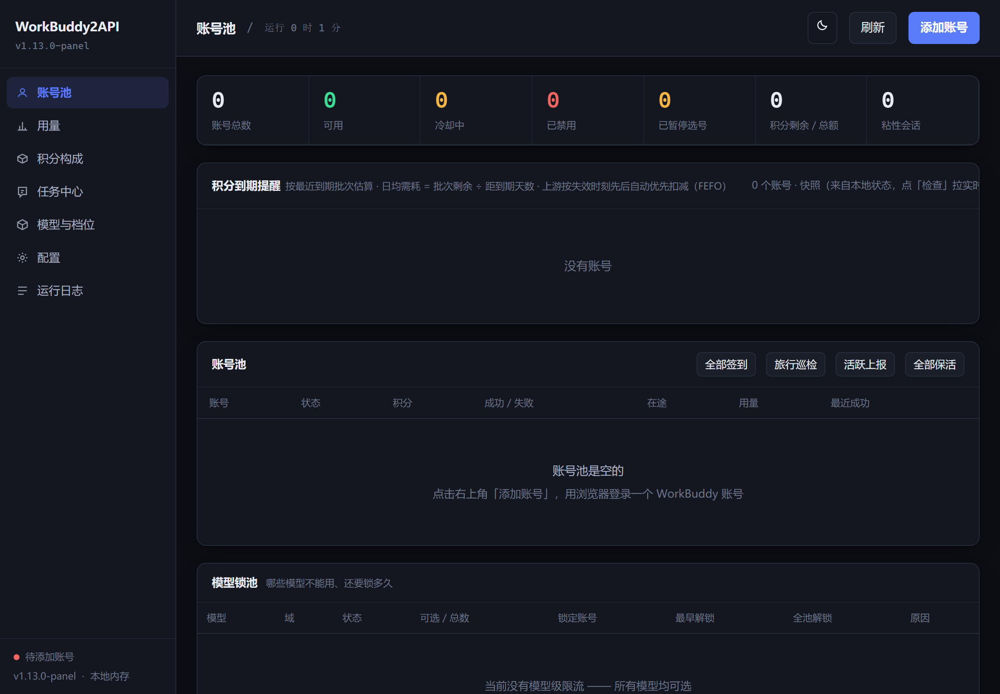
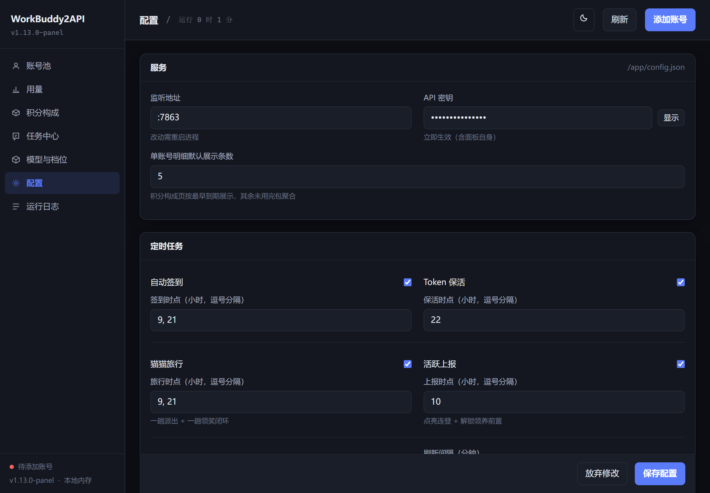
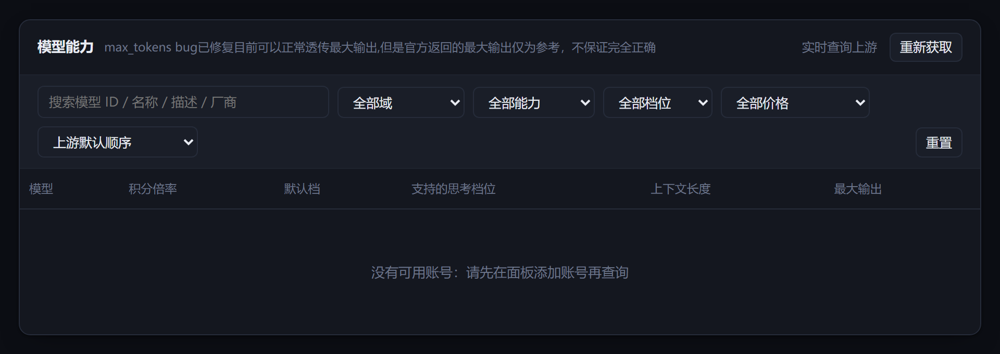

一个容器、一个管理面板，把已注册账号的模型额度摊成三条标准端点：/v1/chat/completions、/v1/responses、/v1/messages。pi、codex、Claude Code 都能直接连，不用协议桥、不用改客户端源码。下载包里带着完整源码与兼容层，一条命令现场编译。
docker compose up -d --build 一条命令编译并起容器。包里不带预构建镜像 —— 编译出来就是你本机的架构（Apple Silicon 也是原生 arm64）。auths/ 里。别把 auths/ 和 config.json 传给别人、也别丢进公开仓库。Sliverkiss/workbuddy2api 曾经整个删过一次库。这种项目的常态是随时消失 —— 不要把它当成长期基础设施。同一个容器、同一份账号池、同一套选号与用量统计，对三种协议各开一扇门：
| 端点 | 协议 | 典型客户端 | base 该写什么 |
|---|---|---|---|
/v1/chat/completions | OpenAI Chat | pi、任何 OpenAI SDK、绝大多数第三方客户端 | http://127.0.0.1:7863/v1 |
/v1/responses | OpenAI Responses | codex ≥ 0.125（wire_api = "chat" 已被移除，只能讲 Responses） |
http://127.0.0.1:7863/v1 |
/v1/messages | Anthropic Messages | Claude Code | http://127.0.0.1:7863（不带 /v1） |
上游原版只有第一条。后两条是这个 fork 里加的兼容层（src/internal/server/responses.go、messages.go），做法是翻译协议后复用同一条 chat 链路，所以选号轮转、粘性会话、冷却、积分账本、请求归档全都自动继承，不存在两套调度状态互相打架。
docker + docker compose 插件。golang:1.23-alpine（约 370 MB 展开）与 alpine:3.20。这是整套流程唯一必须联网的一步 —— 拉不动时看下面「排错」第一节，或 README.md 里的加速器写法。WB2A_BIND）。解压后的目录长这样，后面所有命令都在这个目录里执行：
wb2api/
├── docker-compose.yml # build: ./src，一条命令编译 + 起容器
├── config.example.json # 复制成 config.json，改掉 api_key
├── src/ # 完整源码（上游 6b31db6 + 兼容层），Dockerfile 在这里
├── patches/compat.patch # 相对上游的兼容层补丁（6 文件 / 119,662 字节）
├── UPSTREAM.md # 构建 / 跟版 / 回滚流程
└── README.md# bash / Git Bash
cp config.example.json config.json
node -e "console.log('sk-'+require('crypto').randomBytes(18).toString('base64url'))"
# PowerShell
Copy-Item config.example.json config.json把生成的那串（或 openssl rand -base64 24 的结果）填进 config.json 的 "api_key"，替换掉占位的 REPLACE_ME。其余字段先别动，默认值就是能跑的状态。
docker compose up -d --build
# 首次会拉 golang:1.23-alpine + alpine:3.20 并编译 4 个二进制，约 2-4 分钟
docker compose logs -f # 看到监听 :7863 就可以 Ctrl+C 退出日志--build 别省：改了 src/ 却不带这个旗标，compose 会直接用旧镜像，看起来像「改了没生效」。
默认只绑 127.0.0.1:7863，局域网里的手机也访问不到。确实需要别的机器访问时：
# 前提：api_key 已经设成非空随机串，并且你清楚它在暴露什么
WB2A_BIND=0.0.0.0 docker compose up -d --build# 1) 健康检查：此时还没有账号 → healthy 是 0，HTTP 码 503（设计如此，不是坏了）
curl -s -i http://127.0.0.1:7863/healthz | head -1
curl -s http://127.0.0.1:7863/healthz
# → HTTP/1.1 503 Service Unavailable
# → {"healthy":0,"realm_servable":{"cn":false,"global":false},"service":"workbuddy2api","total":0}因为镜像是按这个接口做 HEALTHCHECK 的，所以还没加账号时 docker compose ps 会显示 (unhealthy)。加完第一个可用账号就自动转 (healthy) —— 不用重启，也不用慌。
# 2) 面板能开（浏览器里打开也行）
curl -s -o /dev/null -w '%{http_code}\n' http://127.0.0.1:7863/panel/
# → 200
# 3) 鉴权生效：随便编一个 key，必须是 401
curl -s -o /dev/null -w '%{http_code}\n' -H "Authorization: Bearer wrong" \
http://127.0.0.1:7863/v1/models
# → 401 如果是 200，说明 api_key 是空的或还是 REPLACE_ME，立刻改面板是主路径：浏览器打开 http://127.0.0.1:7863/panel/，它会先要一次 API 密钥（就是 config.json 里的 api_key，存在浏览器 localStorage 里），进去之后点右上角「添加账号」：
不方便开浏览器也可以走命令行（镜像里已经带了 login 二进制与脚本）：
docker exec -it workbuddy2api ./login.sh
# 按提示打开链接登录 → 回来按 y → 拿到 token 并写入 auths/
docker restart workbuddy2api # 命令行登录写的是文件，重启才会加载多个账号就是重复点几次「添加账号」。选号是按剩余积分、到期时间、失败率自动挑的，不用手工指定。
部署完挨个打勾；有一条不对就别急着接客户端。
config.json 是文件，不是目录（ls -l config.json）api_key 是一串随机值，既不是空字符串也不是 REPLACE_MEdocker compose ps 变成 (healthy)（加之前是 (unhealthy)，因为 /healthz 在空池时返回 503）/healthz 返回 JSON，加完账号后 healthy ≥ 1 且 HTTP 码变 200/v1/models 得 401/v1/models 得 200，且 data 里有模型auths/ 没被误传给别人（里面有明文 token）config.json 不存在 → 容器起不来compose 里 ./config.json 是挂在容器里的文件。宿主机上没有这个文件时，Docker 会把挂载点当成目录创建出来，于是容器里 /app/config.json 变成目录，进程读配置直接失败：
Error: read config: read /app/config.json: is a directory解法就是前面第 ② 步：先 cp 再 up。已经踩到了的话，docker compose down → 删掉那个空目录 → 重新 cp → 再 up。
api_key 留空 = 完全不鉴权（跟 README 说的相反）上游 README 写的是「留空会自动生成随机密钥」。实际行为是：只有 config.json 不存在时程序才会写一份默认配置并生成 key（cmd/server/config.go:342）。文件存在、而 api_key 是空字符串时，鉴权函数第一行就 return true（internal/httpauth/httpauth.go:26）—— 任何请求都被放行。
自查，两条结果必须相反：
curl -s -o /dev/null -w 'wrong:%{http_code}\n' -H "Authorization: Bearer wrong" http://127.0.0.1:7863/v1/models
curl -s -o /dev/null -w 'right:%{http_code}\n' -H "Authorization: Bearer 你的key" http://127.0.0.1:7863/v1/models
# 期望：wrong:401 right:200
# 若两条都是 200 → api_key 为空，任何人（含扫端口的机器人）都能白用你的账号同理：面板 /panel/ 页面本身不鉴权（app.js 也匿名可读），只有 /panel/api/* 要 key。所以「面板能打开」不代表「鉴权正常」，一定要用上面那条假 key 的 curl 验。
三份模板都能直接抄。唯一容易抄错的是 base 到底带不带 /v1 —— 先看这张表再看细节：
| 客户端 | 配置字段 | 该写什么 | 最终请求的路径 |
|---|---|---|---|
| pi | baseUrl | http://127.0.0.1:7863/v1 | /v1/chat/completions |
| codex | base_url | http://127.0.0.1:7863/v1 | /v1/responses |
| Claude Code | ANTHROPIC_BASE_URL | http://127.0.0.1:7863 | /v1/messages |
另外三份模板都把 key 交给环境变量，而不是直接写进配置文件 —— 这些配置文件经常被同步、被截图、被丢进 dotfiles 仓库。
~/.pi/agent/models.json 里加一个 provider，api 用 openai-completions：
{
"providers": {
"wb2api": {
"baseUrl": "http://127.0.0.1:7863/v1",
"api": "openai-completions",
"apiKey": "$WB2API_KEY",
"compat": {
"supportsDeveloperRole": false,
"supportsReasoningEffort": true,
"maxTokensField": "max_tokens"
},
"models": [
{
"id": "cn:deepseek-v4.1-flash",
"name": "DeepSeek V4.1 Flash",
"reasoning": true,
"input": ["text"],
"contextWindow": 1000000,
"maxTokens": 32000
}
]
}
}
}id 必须是网关 /v1/models 里真实存在的名字（带 cn: 前缀），写错就是 503。apiKey 支持 $NAME / ${NAME} 展开，也可以写 !command 执行命令取值 —— 用前者就够：设好环境变量 WB2API_KEY，配置文件里只留 "$WB2API_KEY"。compat 三键是给「非 OpenAI 官方上游」的适配：不走 developer role、认 reasoning_effort、上限字段叫 max_tokens。~/.pi/agent/settings.json 里把它设成默认：
{
"defaultProvider": "wb2api",
"defaultModel": "cn:deepseek-v4.1-flash"
}~/.codex/config.toml：
[model_providers.wb2api]
name = "WorkBuddy2API"
base_url = "http://127.0.0.1:7863/v1"
wire_api = "responses"
env_key = "WB2API_KEY"
request_max_retries = 4
stream_max_retries = 10
stream_idle_timeout_ms = 300000
[profiles.wb2api]
model = "cn:deepseek-v4.1-flash"
model_provider = "wb2api"用法：codex --profile wb2api，或者把 profile = "wb2api" 写到文件顶层当默认。
wire_api = "responses" 是唯一选择：codex 0.125 起删了 "chat"，上游原版网关会直接 404（表现是 ERROR: Reconnecting... 1/10 循环）。env_key 指的环境变量里放 key，别写 api_key 字段。cn:glm-5.3 这种名字不能当 profile）。503 no_healthy_account + code 11102 model [...] service info not found，看起来像账号问题，其实是模型名不认识。~/.claude/settings.json（或用 CLAUDE_CONFIG_DIR 指向的那个目录）的 env 段：
{
"env": {
"ANTHROPIC_BASE_URL": "http://127.0.0.1:7863",
"ANTHROPIC_AUTH_TOKEN": "sk-你的api_key",
"ANTHROPIC_MODEL": "claude-sonnet-4-5",
"ANTHROPIC_DEFAULT_SONNET_MODEL": "claude-sonnet-4-5",
"ANTHROPIC_DEFAULT_HAIKU_MODEL": "claude-haiku-4-5",
"ANTHROPIC_DEFAULT_OPUS_MODEL": "claude-opus-4-6",
"ANTHROPIC_SMALL_FAST_MODEL": "claude-haiku-4-5"
}
}ANTHROPIC_BASE_URL 不带 /v1 —— Claude Code 自己接 /v1/messages。ANTHROPIC_AUTH_TOKEN（它发 Authorization: Bearer）。只设 ANTHROPIC_API_KEY 时客户端发的是 x-api-key，网关只认 Bearer，结果是 401。claude-* 就行：网关会按家族映射到真实模型（claude-opus-4-6 → cn:space-bunny、claude-sonnet-4-5 → cn:glm-5.3、claude-haiku-4-5 → cn:deepseek-v4.1-flash…），未知的 claude-* 落到默认档。映射表在 src/internal/server/messages.go，改这一处即可。cn:* 名字直接填进去：能跑，但每条消息都会刷 unrecognized_model 提示，且上下文窗口按 200K 估。下面三张是空白实例（还没加账号）截的，账号池为空，所以没有昵称、uid、积分之类的东西。面板自带明暗两套，跟随系统。



| 路径 | 是什么 |
|---|---|
docker-compose.yml | build: ./src 一份搞定。端口默认 ${WB2A_BIND:-127.0.0.1}:7863，三个挂载点是 auths/、data/、config.json。 |
config.example.json | 配置样例。复制成 config.json 后只需要改 api_key。 |
src/ | 完整源码：上游 6b31db6 + 兼容层的 6 个文件（约 2.2 MB / 171 文件）。Dockerfile 也在这儿。删掉了 .git 与 .github，其余原样。 |
src/docker-compose.yml | 上游原样的那份（build: .，在 src/ 里单独跑）。日常用包根那一份就够。 |
patches/compat.patch | 兼容层相对上游的完整补丁（119,662 字节 / 6 文件）。想核对「到底改了什么」，直接读它。 |
UPSTREAM.md | 构建、跑测试、跟上游升版、回滚的完整流程。 |
src/scripts/ | 上游带的诊断脚本。注意：probe_max_tokens.py 会真实发请求、真实消耗额度；probe_active.py 默认 dry-run（只看不发）。 |
构建就是主路径（包里不带预构建镜像），改完 src/ 直接：
docker compose build # 只构建，不起容器
docker compose up -d --build # 构建 + 重启，重跑变化的层绕过 compose 手动 build（DOCKER_BUILDKIT=0 别省：Dockerfile 首行要 BuildKit 去拉 frontend 镜像，国内 DNS 经常失败）：
cd src
DOCKER_BUILDKIT=0 docker build -t workbuddy2api-panel:1.13.0 .测试不用装 Go，容器里跑：
MSYS_NO_PATHCONV=1 docker run --rm -v "$PWD/src:/src" -v "wb2api-gocache:/go" -w /src golang:1.23-alpine \
sh -c "go build ./... && go vet ./internal/server/ && go test ./... -count=1"上游更新后的跟版流程（并行克隆 + 补丁重放 + canary 验证）、以及「回滚到上一版」的步骤，都写在包里的 UPSTREAM.md。回滚靠本地 tag（重建前 docker tag … prev），因为这些包里不再存旧镜像。核心只有一句：别在 src/ 里直接改——它是快照不是仓库，改动请改在克隆下来的新上游上，然后重新导出 patches/compat.patch。
| 症状 | 原因 / 处理 |
|---|---|
构建卡在 failed to fetch anonymous token … dial tcp …:443 |
BuildKit 拉不到 frontend，或基础镜像本身就拉不动。先试 DOCKER_BUILDKIT=0 docker compose build；还不行就给 golang:1.23-alpine / alpine:3.20 配镜像加速器（README.md 里有可直接复制的四行 pull + tag）。 |
改了 src/ 里的代码，行为没变 |
up -d 少了 --build，compose 复用了旧镜像。加旗标重来即可。 |
容器一直是 (unhealthy) |
先看 curl -i http://127.0.0.1:7863/healthz：空池返回 503 是设计，加一个可用账号就转 healthy。已有账号还 503，就是那个账号在冷却 / 额度耗尽 / 两个域名都不可达。 |
read /app/config.json: is a directory |
宿主机上没有 config.json 就先 up 了，Docker 把挂载点建成了目录。down → 删目录 → cp → 再 up。 |
| 容器 healthy，但所有请求都 401 | 多半是客户端没带 Authorization: Bearer（Claude Code 只设 ANTHROPIC_API_KEY 就会这样），或 key 里混了引号/空格。 |
| 容器 healthy，假 key 也返回 200 | api_key 为空。改 config.json（面板「配置」页保存即可，立即生效）。 |
permission denied 写 auths/ |
Linux 上 uid 不匹配：PUID=$(id -u) PGID=$(id -g) docker compose up -d，或 chown -R 10001 auths data。Windows 不受影响。 |
codex 一直 Reconnecting... 1/10 |
打到上游原版（没有 /v1/responses）或 base 少了 /v1。用 curl -X POST .../v1/responses 应返回 400/503 而不是 404。 |
Claude Code 刷 unrecognized_model |
模型名填了 cn:*。改成 claude-* 家族名，让网关做映射。 |
503 no_healthy_account |
池子里没有可用账号：没加账号、账号在冷却、或额度耗尽。看面板「账号池」与「模型锁池」。 |
| 端口被占用 | WB2A_BIND=127.0.0.1 docker compose up -d 只能改绑定地址；换端口要改 compose 里的 7863:7863 左侧。 |